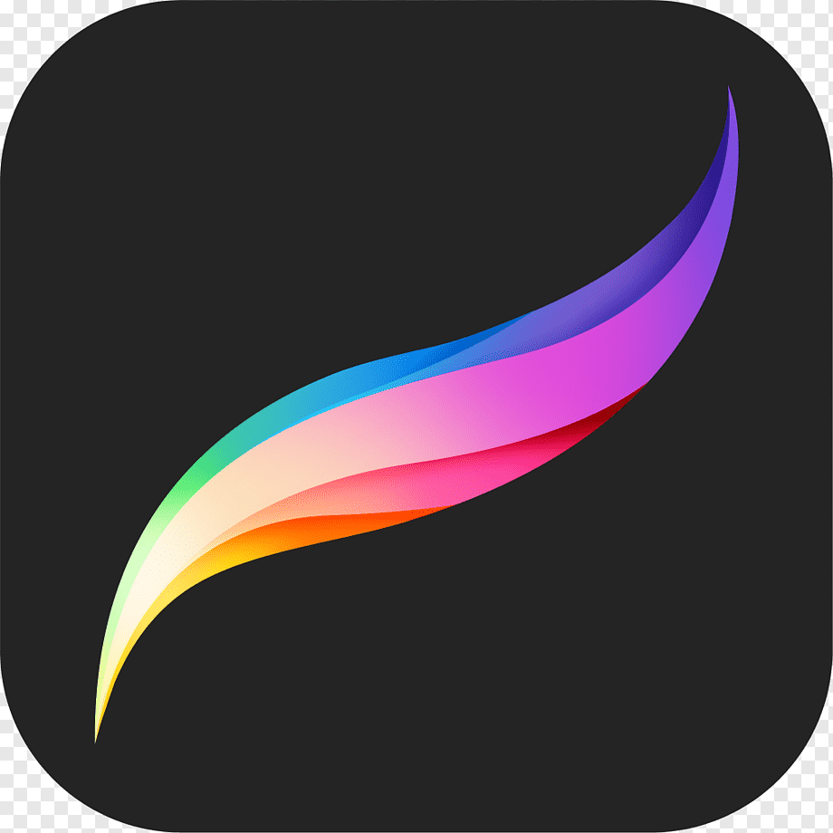

Sobre mi

¡Hola! Soy Laura, tengo 19 años y estudio Diseño Multimedia y Gráfico.
Me apasiona especialmente el mundo del branding y la tipografía, donde encuentro una forma de dar personalidad y voz a las ideas. Lo que más me inspira son cosas sencillas como las flores, los atardeceres, Londres y todo lo que transmite calma o nostalgia. Me fijo mucho en sus colores y en cómo cuentan historias sin palabras. Mi color favorito es el blanco, porque me transmite paz y equilibrio.


Software
Estas son algunas de las aplicaciones que manejo a la hora de diseñar y elaborar mis proyectos:
Figma
Illustrator
Photoshop
Premiere Pro
Indesign

Procreate
Canva
VS Code